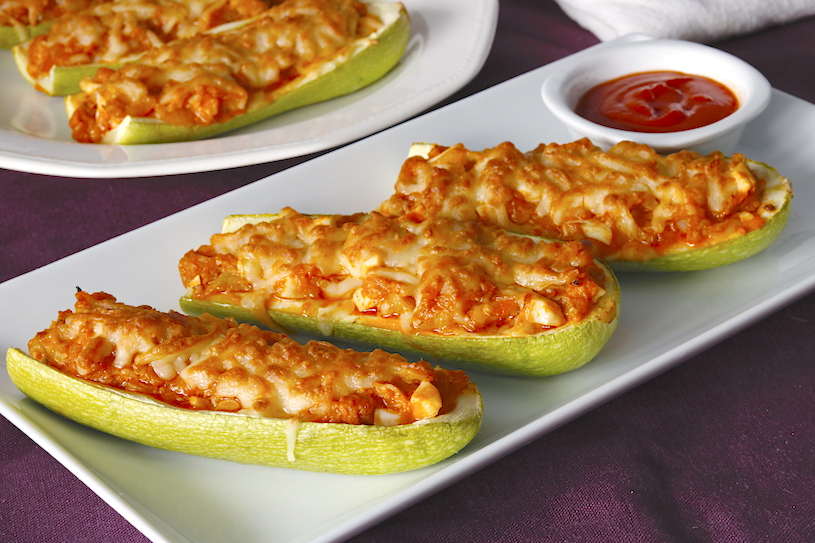

¡LAS MEJORES RECETAS SALADAS!
ZAPALLITOS RELLENOS
Ingredientes
•6 zapallitos "italianos" grandes
• 500g de cebollas
•150g de porto bellos
•150g de champiñones
•50 g de hongos pino
•100g de castañas
•250g de ricotta
•200g de parmesano
•4 ajos picados
•Comino
•Sal
•Ralladura de limon
•Salsa de tomate
•Romero
PROCEDIMIENTO:
•Cortamos la cabeza de los zapallitos.
•Ahuecamos los zapallitos.
•Los horneamos con aceite de oliva picado, y lo hongos los salteamos y condimentamos bien.
•Juntamos con ricotta y parmesano y rellenamos.
•Servimos en salsa de tomate.
Tortilla de verduras
Ingredientes
•6 huevos
•2 pimiento verde
•250 gramos de judía verde
•2 tomate
•1 cebolla
•100 gramos de champiñnes
•3 cucharadas de leche
•Sal
•Pimienta
•Aceite
PROCEDIMIENTO:
•Lava, despunta y trocea las judías. Cuécelas en agua salada 10 minutos y escúrrelas.
•Pela y corta los tomates y pimientos en dados.
•Pela y pica finamente la cebolla, y lava y lamina los champiñones.
•Rehoga 8 minutos la cebolla en 4 cucharadas de aceite.
•Incorpora las judías y el pimiento y sofríe 6 minutos.
•Incorpora los champiñones y cuece 3 minutos.
•Por último, añade el tomate, sazona y cuece 3 minutos más.
•Bate los huevos con la leche sin que llegue a hacer espuma. Sazona y añade las verduras. Calienta 1 cucharada de aceite en una sartén antiadherente y añade la mezcla de la tortilla. Deja que se cuaje a fuego medio.
•Cuando esté cuajada por la base, dale la vuelta rápidamente utilizando un plato que sea más grande que la sartén. Deslízala de nuevo a la sartén y cocínala por el otro lado hasta que cuaje.
•Sírvela recién hecha.
Buñuelos calentitos de acelga
Ingredientes
•Acelga 1 atado
•Queso rallado 1 taza
•Harina c/n
•Huevos 2
•Leche c/n
•Miga de pan 1 taza
•Sal
•Pimienta
•Aceite c/n
PROCEDIMIENTO:
•Cortar la acelga en finas tiras, reservar.
•En un bowl mezclar los huevos, con la harina, la leche.
•Incorporar harina hasta lograr una masa densa, como para buñuelos.
•Luego incorporar la acelga y el queso. Por último freír hasta dorar.
CALABACINES RELLENOS

Ingredientes
•4 calabacines
•2 cebollas
•2 zanahorias
•1 tomate
•½ pimiento rojo
•1 diente de ajo
•2 ramitas de perejil
•1 queso mozzarella bola
•Aceite de oliva
•Pimienta
•Sal
PROCEDIMIENTO:
•Lava y despunta los calabacines.
•Cuécelos 2 minutos en agua salada, déjalos enfriar y córtalos a la mitad a lo largo.
•Retira la pulpa con una cuchara y pícala.
•Pela y pica las cebollas y el ajo.
•Pela y pica en daditos los tomates, el pimiento y las zanahorias.
•Rehoga la cebolla 5 minutos en una sartén con 4 cucharadas de aceite de oliva.
•Agrega la pulpa de calabacín, las zanahorias, el pimiento y el tomate y cocínalos 5 minutos más. Rectifica de sal.
•Rellena los calabacines con las verduras y espolvórealos con la mozzarella escurrida y troceada.
•Gratínalos en el último momento y sírvelos de inmediato espolvoreados con perejil.
.png)